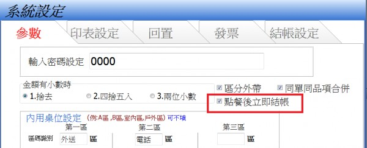

不利先結方式商家
小店採用先結方式，
1.點餐-->選取內用或外帶---->單子即跳至備餐(已設定自動列單，所以單子會至廚房出單準備出餐，這OK)，
但櫃檯下一步要結帳，需至備餐區再叫出單據，進行結帳。
2.倘若使用點餐-->直接結帳-->假使此單是內用又須先至左上角變更為內用，再點直接結帳或需點選金額後才可完成結帳
3.先結店家約略作業流程是:
客戶持點菜單至櫃檯點餐---->
櫃檯點餐並計費--->
櫃檯會計區分內用桌號或外帶(此時按選外帶或內用桌號時單據即應開始列印並於備餐螢幕顯示且應為已結單)-->
顧客買單櫃檯會計找錢此時即將所印單據，連同找錢將單據或號碼牌交客戶-->
外帶客戶等候區等候叫號and內用客戶返回餐桌候餐--->
送餐，待全部出餐時，主螢幕應也跟著消失(單據跑至已結單，而非於主螢幕上呈現綠色)
是否可於設定內讓正式版客戶選用流程?或請小修正?譬如您很貼心設計小算盤，其實商家每日算錢，算的都跟精一樣了，螢幕小算盤功用其實不大，且一般商家都自備有電子計算機在收銀機旁。
用過幾套POS軟體您的最棒，小小建議希望不要見怪。而且區分先結、後結系統，相信您的生意會更加興隆!!~~
1 個回答
您好
新增參數
點餐後立即結帳 請至首頁下載更新

請參考